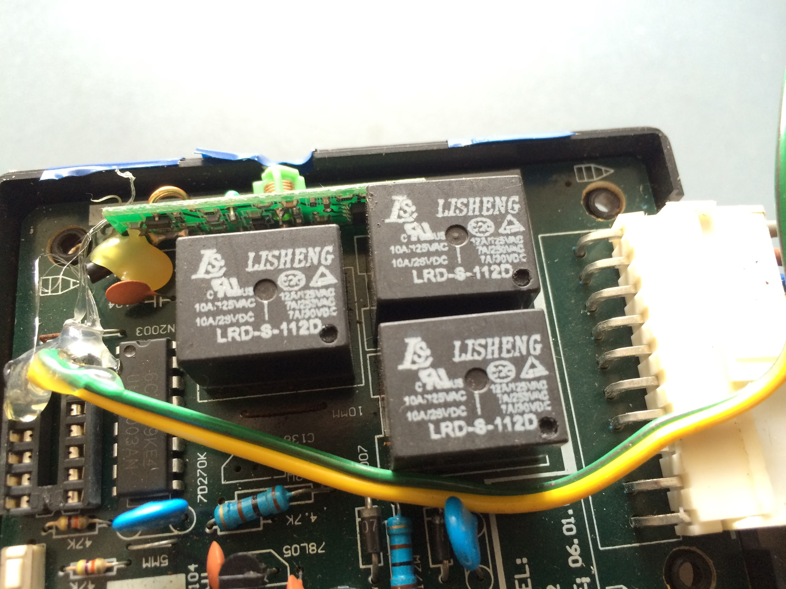
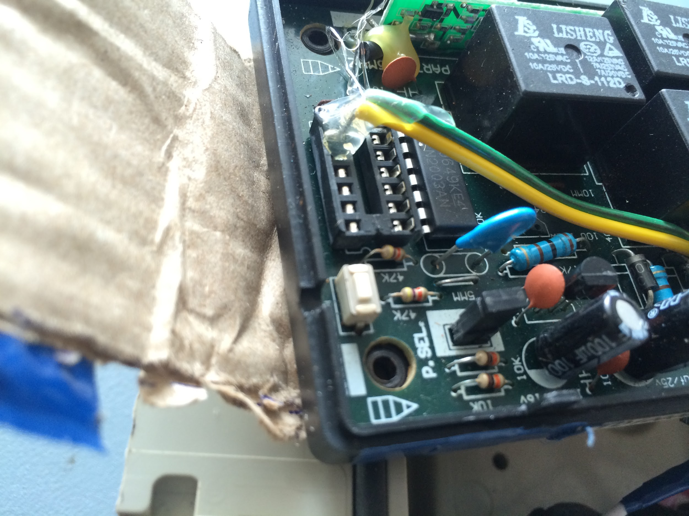
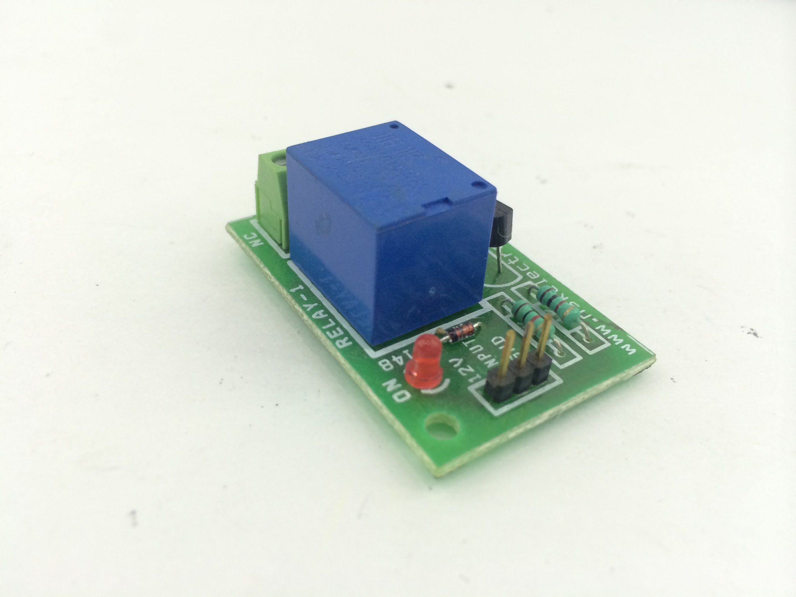
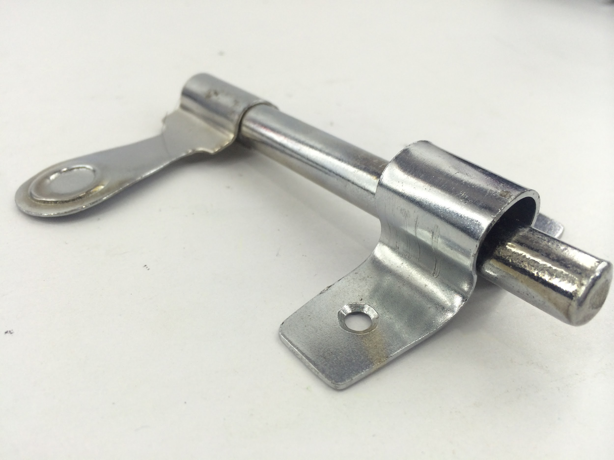
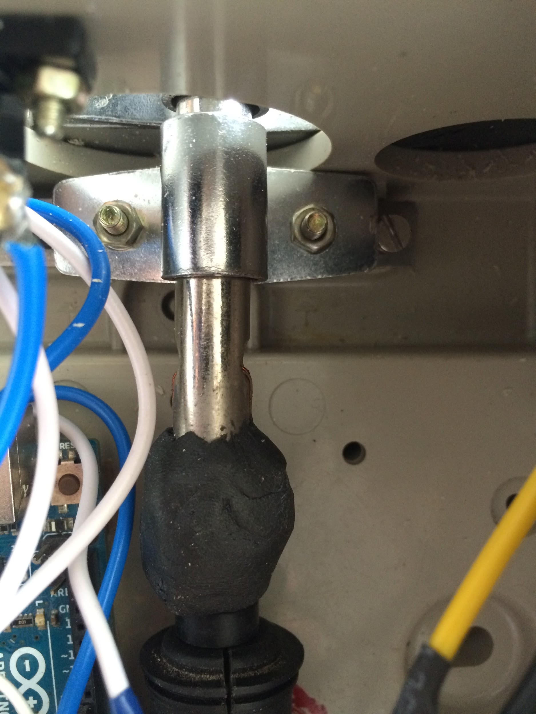
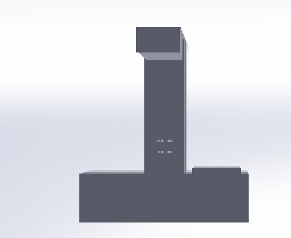
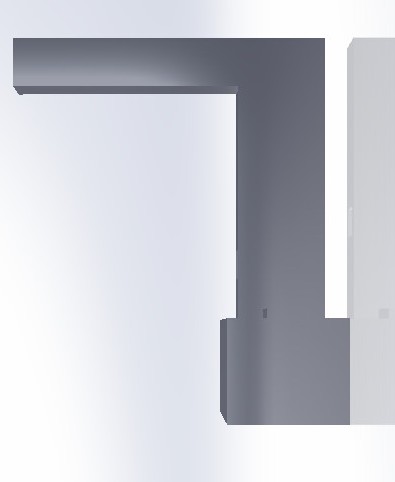
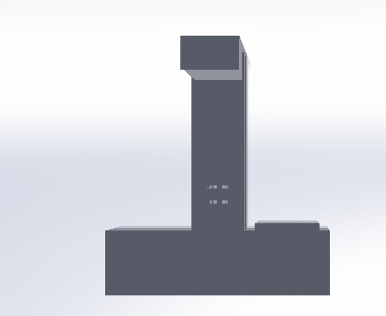
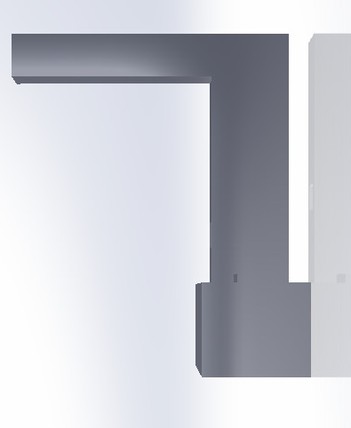

A Simple python program to convert wav audio format to raw audio format for Arduino.

Grow plants with out soil and fish in the same system. Cotrol the the fish feeder ,the water flow water-airation and wate water out let all from a locally hosted webpage.
Even though the project is extremly simple,I include this in my portfolio because it shows how I found a solution to a problem,like an engineer would.


The central lock system or the remote locking mechanism in your car has 2 major parts.
We wont be using the Remote control for this but we will be hacking into the electronic control unit and converting in to the actuator driver circuit for an arduino. Some of you may be wondering , Why don’t we connect the actuator directly on to the arduino , we cannot do this because the actuator needs 12 V to operate . It may work on 5 V but , It will draw too much current ,More than the maximum current rating of the Arduinos' I/O port. There are several ways to tackle this.. We could use some darling Pairs to make an H-bridge or There may even be a dedicated IC for High Current H-bridge Drivers. But I got an even better idea.
There were two relay that control the motion of an Actuator. One for open and another for close.By default either of the relay will be driving the motor to either close or open.So if the open relay was triggered, the Actuator would open and if close relay was triggered the actuator would close.
The PIC controlled the relay ,with the Darlington pair IC s as the current Driver. I removed the PIC from the IC Mount and soldered a piece of wire each from the track that controlled to both the relay and I connected the other end of the wires to a Digital pin each of the arduino. I also connected their grounds together and connected the Vin Pin of the arduino to the 12 V rail of the Controller.
There is a onboard regulator on the control unit that converts 12 v to 5V for the PIC.So that will power up The ULN2003 and the 12 V will energize the relays Now if I power up the arduino through the DC jack with a 12 V power supply, I can also power up the electronic control unit and If every thing is connected right , when we drive the " open IO "pin high , and the "close IO " pin Low, I can move the actuator in the Open position and when we drive the " open IO "pin LOW , and the "close IO " pin HIGH, I can move the actuator in the Close position. In the code below IN1(Pin A1) is Open IO and IN2(Pin A2) is close IO. But there was a problem with this approach. The The Actuator Contains a DC motor and a mechanism to convert rotational motion to linear motion. But by default the motor is always turned clockwise or anti clock wise. So the Motor heats up unusually because of it being energized continuously . So to rectify this we added a 5V relay between the arduino and the Motor. So to Lock or unlock the Motor first turn on the control relay to activate the Center lock unit then pass the relay energizing sequence .
Once a Lock or unlock action has been performed, de-energize the control relay to. Now we can control a linear actuator with an arduino.In the code below the Control relay is connected to the Pin number 8 of the arduino. Check out the following Code.
// Relay pins
const int IN1 = A1 ;
const int IN2 = A2 ;
// control relay
const int relay = 8 ;
void setup()
{
pinMode(IN1,OUTPUT);
pinMode(IN2,OUTPUT);
pinMode(relay,OUTPUT);
}
void lock()
{
digitalWrite(relay,HIGH);
delay(300);
digitalWrite(IN1,HIGH);
digitalWrite(IN2,LOW);
delay(300);
digitalWrite(relay,LOW);
delay(3000);
}
//The function that contains relay triggering sequence to UnLock the Door.
void unlock()
{
digitalWrite(relay,HIGH);
delay(300);
digitalWrite(IN1,LOW);
digitalWrite(IN2,HIGH);
delay(300);
digitalWrite(relay,LOW);
delay(3000);
}
void loop()
{
lock();
delay(1000);
unlock();
delay(1000);
}

The end of the Actuator is mechanically coupled to a metal door latch and when ever the actuatro moves the door latch also moves .

 The system has 2 Raspberry pi Images. One For the server and another for
The system has 2 Raspberry pi Images. One For the server and another for


I also developed a software called "Rhythm Manager" for easy conversion
of audio files from wav format to raw format. The UI is very user friendly
and intutive with visual aids and audio feedback.

Cyborg is a Device that can convert any object into a musical instrument. It has what i call tentacles that can attach to any object using an adhesive compound, and that object can play any sound you ask it to.
The next version of the device will have all the sensors to be wireless. So it can be really connected to anything anywhere in the wifi range. This also means that hundreds of sensors can be connected to it.


All the periferals mentioned above are inbuilt on to the board and do not require any shields or add-ons. The burgstrips are also shield friendly. All the periferals are already wired on and can be selecteced by using the jumper pins.
The whole board was designed , fabricated and documented by me and my mentor Ajith Peter on behalf of Standard Process, a Company owned by my mentor. I went through the whole proess of making a product from scratch. We converted an ordinary convection Oven into a reflow oven , manually "picked and placed" almost 100 SMD components and soldered the remaining parts to 150 boards. And we did a workshop for 130 students with these boards. We did the whole thing by just the two of us. and in the end we were able to sell the board for about $20 per board.
 



Use this area of the page to describe your project. The icon above is part of a free icon set by Flat Icons. On their website, you can download their free set with 16 icons, or you can purchase the entire set with 146 icons for only $12!
Aquaponics is a farming technique which uses fish waste as food for plants.It
has been getting a lot of attention lately since it will be a very
viable , fast , econimical and efficient method of farming. Especially with
farm lands and other natural resources depleting very fast.

In this project me and my team mates wanted to control the whole system
electronicaly from a webpage , hosted it the local network. We cound control
the water flow into and outside the fish tank and into the plants basin, the
fish feeder and the valves for fresh water and dirty water.
We hosted the webpage in an arduino with an ethernet shield and connected
all the motors, valves and other controls and indicators to the arduino via a
relay module. Rest is magic written in code.

We originaly wanted to go a step further and make the control accessable to
anyone on the internet throug their Twitter or Facebook account. We wanted
the controls to work according to the facebook posts or Tweets when a user
tweets a particualar command. But that was a litte difficult to implement on
an arduino and we are planning to do it on a raspberry pi soon.

This is a project that I did from shear necessity. This project is extremely
simple and can be done by primary student, If he knows how to solder. But
, I still include this in myportfolio because, this is one of the instances which
I can say proudly that I found a problem and I solved it like an engineer would.
Even though I have an electric violin, I rarely use it, since I love the sound
of my acoustic violin better. There is no sound more pure than that from
the sound box on an acoustic violin. Now a days I always directly mic my
violin or use a phantom powered pick up.But before I could afford all these
fancy stuff, I had to depend on low cost pick ups for amplifying my violins
sound. I used a piezo pick up that had to be clipped on to the bridge of
my violin. This was a disaster, since I could only get the higher frequencies
from the bridge. Piezo disks already are treble pickers and when connected
to the bridge, nothing but treble came out from it. This was killing the
purity. So I decided to break open that pick up and see what is in there.
As expected it had just a piezo disk connected to a single core shielded
wire. I had a few piezo disks and the shield wire laying around from the
electronic drums project. So I decided to make one but with a better
design.
I knew that If I could place the piezo disk right on the sound box than on
the bridge, I could get a better sound. And I am a carnatic Violinist as
well. So I needed a design that would be useful to play when I was sitting
on a mat and standing upright like for the western classical style playing.
And it had to be travel friendly and easy to remove and store.So I came
up with this design.
It can be placed right at the heart of the violin, It can be firmly held on
to the sound box with the right pressure to get the best sound possible with
a piezo pick up. It had a long cable which can be conveniently coiled into
the box.It is travel friendly and supports both my styles of playing.


Mr Ranjith Antony is the CEO of Perleybrook Labs LLC, where I am currently employed. He started his career as a lecturer at Model Engineering College and later moved to the US and is currently settled at Portsmouth,New Hampshire. He worked at Avenir computer services,Atniv Inc,Pelco,Schneider Elecric and now Perleybrook Labs. He is an expert on Bluetooth technology and MAC,iOS,Android and Web applications. He is the Co-author of the book "Bluetooth For Java".He is one of the most creative,geeky, diplomatic and down-to-earth person I know.
Ranjith as the CEO of Perleybrook Labs, maintains a very unconventional work culture.The employees are given total freedom and encourages creativity.For me, Ranjith is more of a mentor than a boss. Many at time I am given total freedom to create , improve on and to learn new areas. Such an atmosphere in a workplace is so rare and this helped me to bring out the best in me during my time in Peleybrook Labs.. Ranjiths guidence helped me to be better at programing , documentation and also inspired me to do stop-motion Animations for the tutorials made in Perleybrook and Out side.
NSS College of Engineering was awarded the Outstanding Engineering Institute in South India in 2015.It is one of the most reputed, premier Engineering educational institutions in Kerala, affiliated to the University of Calicut.
incomplete...


{kind=link}